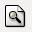

Consultes: definició i tipus
Les consultes eliminen les diferències entre una base de dades i una font de dades. Una base de dades no és més que un tipus de font de dades. De res serveix tenir la informació perfectament estructurada en taules si no hi ha la possibilitat de recuperar aquestes dades.
Els SGBD mitjançant les consultes permeten obtenir tota la informació continguda en les taules afegint interessants funcionalitats:
- Filtrar la informació per recuperar només aquelles dades que interessin en cada cas.
- Ordenar la informació recuperada utilitzant tants criteris com es necessitin.
- Utilitzar diverses taules per obtenir-ne dades combinades.
Una consulta és un objecte de les bases de dades que permet establir criteris de selecció per l’usuari i dóna com a resultat una taula especial dins d’una base de dades.
Hi ha diverses formes de crear consultes en Base segons les característiques de cada projecte:
- Crear una consulta en la vista Disseny.
- Utilitzar l’assistent per a consultes.
- Crear una consulta amb el llenguatge de consultes estructurat SQL.
Aquestes tres possibilitats les trobeu a la part superior de la finestra de l’aplicació, tal com podeu veure a la figura

Analitzem l’espai d’edició de consultes en la figura figura
Funcions amb consultes
Després d’executar la consulta i tenir accés als registres resultants, tindreu la possibilitat de realitzar-hi diferents operacions com per exemple editar o modificar qualsevol dels registres resultants, tallar, copiar i enganxar, buscar informació, etc.
Algunes operacions d’edició no estan permeses.
No està permès editar aquells camps que formen part de la clau de la taula o taules orígens de la consulta.
Navegar pels registres de la consulta
Si el resultat de la consulta conté pocs registres no tindreu problemes, però si el nombre de registres és molt gran, podeu utilitzar els botons de navegació que hem ressaltat en la figura

El primer que mostra la barra de navegació és el número del registre actual en què us trobeu del total de la consulta: 1 de 10, 5 de 200, 34 de 1240, etc. El primer d’aquests valors és editable, cosa que significa que podeu escriure un número de registre i desplaçar-vos-hi directament. Introduïu un valor dins del rang de registres i premeu la tecla Enter.
La resta de botons de la barra permeten el desplaçament.
Cercar un registre
- 
- Botó Cerca
Mitjançant el botó Cerca podeu buscar i localitzar qualsevol informació. Comproveu-ho i seleccioneu el botó Cercar registre de dades per accedir al quadre de diàleg de Cerca.
En el quadre de diàleg de cerca també todeu cercar els registres null que permeten localitzar un camp buit: contingut del camp és null o no és null
Ordenar i filtrar registres
Les consultes són objectes de la base de dades que inclouen entre les seves funcions el filtratge i l’ordenació d’informació obtinguda directament des de taules i altres consultes. Si bé això és cert, també hi ha la possibilitat de recórrer a eines d’ordenació i filtrat per organitzar les dades del resultat de la recerca.
Quan el volum dels resultats de les vostres consultes sigui important heu de recórrer a les eines d’ordenació i filtrat disponibles a LibreOffice Base.
En les dues figures següents, figura i figura, podeu observar els botons disponibles:
El menú contextual de filtre estàndard presenta la possibilitat d’utilitzar els operadors recollits a la taula.
| Condició | Descripció | Realitza |
|---|---|---|
= | Igual a | Retorna els registres que coincideixen amb la condició. |
<> | Diferent de | Només mostra els registres que tenen valors diferents a la condició. |
< | Menor que | Mostra els registres els valors dels quals són estrictament menors que la condició. |
> | Major que | Mostra els registres els valors dels quals són estrictament majors que la condició. |
>= | Major o igual que | Retorna els registres els valors dels quals són majors o iguals a la condició. |
< = | Menor o igual que | Retorna els registres els valors són menors o iguals a la condició. |
com | Com | Mostra els registres i els valors iguals al que establiu. |
no com | No igual a | Mostra els registres i els valors diferents al que s’ha establert. |
Graella de la consulta
El dissenyador de consultes és l’element principal a l’hora de compondre, editar i executar consultes amb LibreOffice Base.
Les accions que podeu aplicar a la graella són:
- Modificar la posició dels camps: per millorar la seva visibilitat i l’accessibilitat.
- Eliminar qualsevol camp. Només cal fer clic amb el botó dret sobre l’encapçalament i seleccionar la comanda Elimina.
- Anomenar un camp de forma més entenedora utilitzant un àlies.
- Escollir la taula d’origen del camp si la consulta està composta de més d’una taula.
- Establir l’ordre de presentació de les dades: ascentent o descendent.
- Visibilitzar o ocultar la informació que correspongui a un camp. No implica eliminar el camp. S’utilitza si la informació és reiterativa i poc rellevant.
- Incloure funcions. Les consultes no només permeten seleccionar certs registres d’una o diverses taules, també permeten realitzar operacions sobre els resultats, com ara sumar, comptar, trobar la mitjana, o calcular el màxim o el mínim d’una sèrie de valors. Cal tenir en compte que si afegim una funció en un camp, la resta de camps també han de tenir associada alguna funció. Hi ha disponibles les següents funcions:
- Grup: permet agrupar les dades de la consulta d’acord amb un o més camps. Les funcions que incorporem es calcularan sobre els grups indicats.
- Compta: determina el nombre de registres o files que tenen algun valor en aquell camp.
- Mitjana: calcula la mitjana aritmètica dels valors d’un camp.
- Suma: calcula la suma dels valors d’un camp.
- Màxim: determina el valor més alt d’un camp.
- Mínim: determina el valor més baix d’un camp.
- Especificar els criteris de filtratge. A la fila de criteris hi podem incorporar totes aquelles condicions que volem que compleixin els registres que ens retornarà la consulta. Podeu utilitzar, entre d’altres, els següents operadors i expressions:
- Els operadors que teniu recollits a la taula i també l’expressió ENTRE… I… que equival a >= …. I < =…..
- Els caràcters comodí ? i *. ? equival a un caràcter i * equival a un conjunt de caràcters. Si el criteri inclou comodins cal que vagi precedit de l’operador COM. Per exemple l’expressió COM ‘c?la’ retornaria els registres amb els valors cola i cala i l’expressió COM ‘s*’ retornaria els registres amb qualsevol valor que comencés per s.
- El caràcter ? com un paràmetre. Si incorporeu aquest caràcter com a criteri en algun dels camps, cada cop que s’executi la consulta podreu indicar el valor del criteri.
- També podeu crear consultes amb diversos criteris. En funció de la fila on col·loqueu els criteris, aquests quedaran units pels operadors lògics AND o OR. Si els criteris es situen a la mateixa fila queden units per l’operador AND, això vol dir que la consulta només ens retornarà els registres que compleixin tots els criteris que hem indicat. Si es situen a files diferents, en canvi, queden units per l’operador OR i la consulta ens retornarà tots aquells registres que compleixin algun dels criteris incorporats, no caldrà que els compleixin tots.